Surface reconstruction from three photographs fails on surface observed by one or two images, where Gaussian splatting leaves holes. AFP-GS adds two modules to the SparseSurf backbone. Foundation prior anchoring aligns a foundation model point map and supervises the geometry where the images cannot, and anchored recalibration removes the depth offset of the prior. On DTU the Chamfer distance falls from 1.18 mm to 0.81 mm, below every published result, and on ETH3D built environments the F1 score at 5 cm against laser scans rises from 0.51 to 0.79.
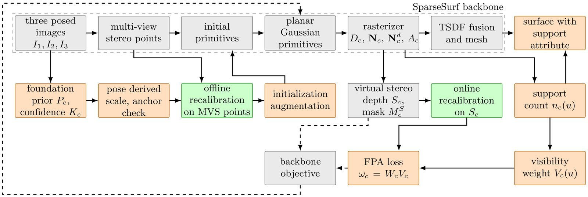
Grey blocks form the SparseSurf backbone, orange blocks foundation prior anchoring with the support attribute, and green blocks anchored recalibration.
M1. Foundation prior anchoring. The point map of a visual geometry grounded transformer is scaled to the scene through the predicted camera centres, adds primitives where the multiview stereo cloud has none, and supervises the rendered depth and normals.
M2. Anchored recalibration. A per view affine correction with a quadratic spatial offset is fitted to the multiview stereo points before optimization and to the stereo depth of the backbone every 300 iterations, with model selection by anchor residual.
C1. Visibility weight. The prior loss is doubled on surface observed by a single training view.
C2. Confidence weight. Pixels below the thirtieth confidence percentile receive no weight and pixels above the ninetieth receive full weight.
C3. Admissibility check. A fitted correction is kept only when the median anchor residual is below one percent of the median depth and the scale lies between 0.7 and 1.4.
C4. Support attribute. The count of views agreeing on the surface is exported for every output vertex and predicts where the surface is wrong, without ground truth.
Mean Chamfer distance in mm over the fifteen DTU scenes with three views. The reference method is reproduced in the same workflow, so every comparison with it is paired by scene.
Little overlap protocol, views 22, 25, and 28
| Method | Chamfer distance (mm) |
|---|---|
| SparseCraft | 1.83 |
| UFORecon | 1.40 |
| FatesGS | 1.37 |
| NeuSurf | 1.35 |
| SparseSurf, reproduced | 1.18 |
| SparseRecon | 1.06 |
| SparseSurf, published | 1.05 |
| DP-GS | 1.02 |
| DP-GS with MASt3R initialization | 0.85 |
| AFP-GS, proposed | 0.81 |
Large overlap protocol, views 23, 24, and 33
| Method | Chamfer distance (mm) |
|---|---|
| Sparse2DGS | 1.13 |
| C2F2NeUS | 1.11 |
| NeuSurf | 0.99 |
| UFORecon | 0.99 |
| FatesGS | 0.92 |
| SparseSurf, published | 0.89 |
| SparseSurf, reproduced | 0.87 |
| AFP-GS, proposed | 0.85 |
Paired comparison with the reproduced reference method
| Protocol and method | Accuracy (mm) | Completeness (mm) | Chamfer distance (mm) |
|---|---|---|---|
| Little overlap, SparseSurf | 1.03 | 1.32 | 1.18 |
| Little overlap, AFP-GS | 0.60 | 1.02 | 0.81 |
| Large overlap, SparseSurf | 0.47 | 1.28 | 0.87 |
| Large overlap, AFP-GS | 0.43 | 1.27 | 0.85 |
Built environments against terrestrial laser scans, ETH3D, three views
| Scene | SparseSurf, F1 at 5 cm | AFP-GS, F1 at 5 cm |
|---|---|---|
| kicker, indoor room | 0.272 | 0.883 |
| playground, outdoor play area | 0.216 | 0.361 |
| relief, stone relief | 0.701 | 0.954 |
| relief_2, stone relief | 0.837 | 0.948 |
| Mean | 0.506 | 0.786 |
Higher is better. The configuration is the one fixed on DTU, and no reconstruction is aligned to the scan.
Ablation, little overlap protocol
| Configuration | Chamfer distance (mm) |
|---|---|
| SparseSurf, reproduced | 1.177 |
| Raw prior, no recalibration | 0.979 |
| Initialization augmentation only | 0.937 |
| Prior loss only | 0.942 |
| Offline recalibration only | 0.811 |
| Without visibility weight | 0.813 |
| AFP-GS, full | 0.810 |
Prior points against the reference scans
| Point set | Little overlap | Large overlap |
|---|---|---|
| Raw prior, scaled | 1.27 | 1.68 |
| Recalibrated prior | 0.82 | 1.01 |
| Multiview stereo points | 0.22 | 0.30 |
Mean distance in mm to the reference scan over the fifteen scenes.
Drag the divider to wipe between the photograph and the selected frame. Tabs select the protocol, thumbnails select the scene, and the button cycles the frames.
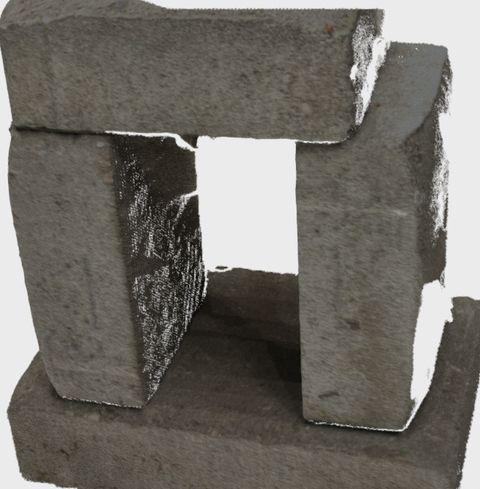
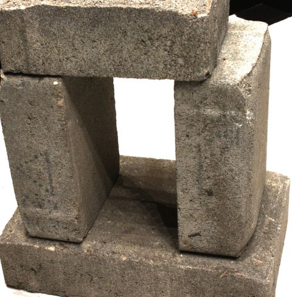
Photograph AFP-GS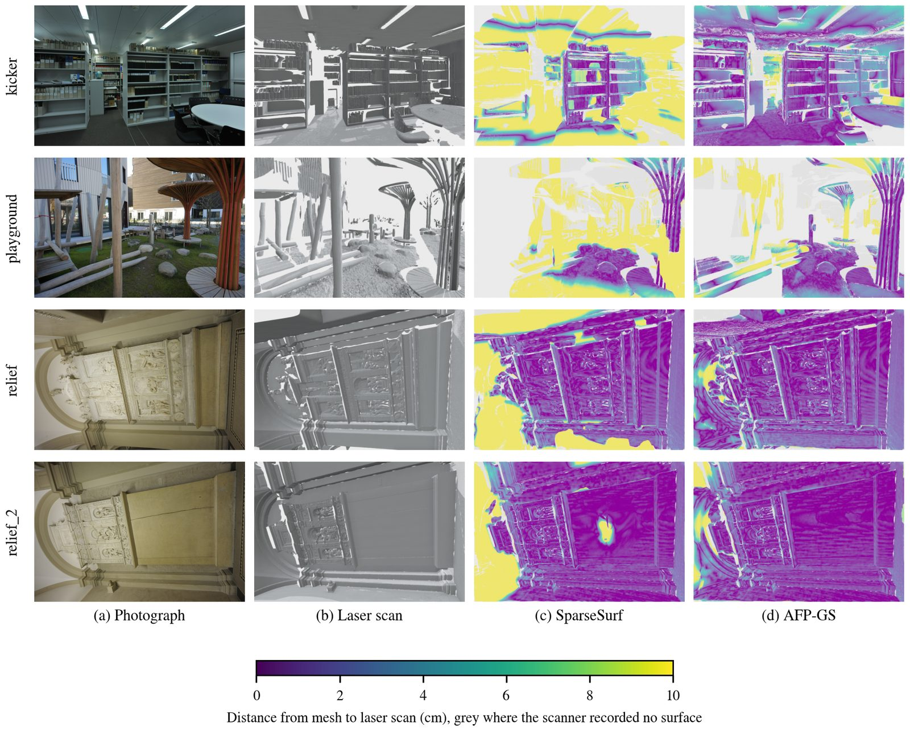
Four ETH3D built environments: photograph, laser scan, SparseSurf, and AFP-GS, coloured by the distance to the scan from 0 to 10 cm.
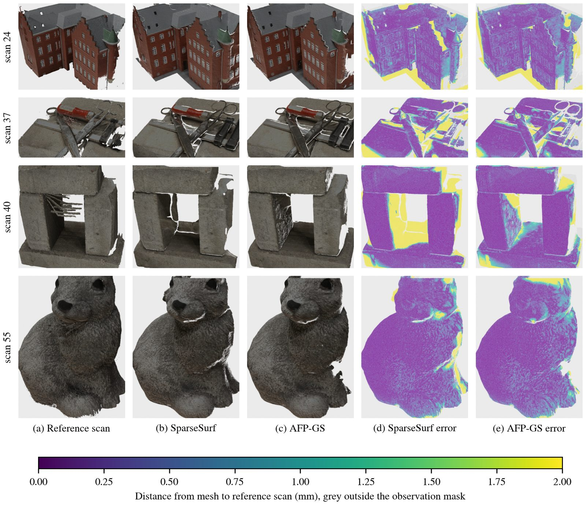
Four DTU scenes: reference scan, SparseSurf, AFP-GS, and the distance to the scan from 0 to 2 mm.
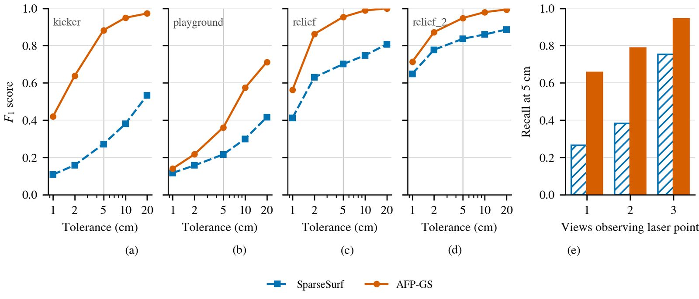
F1 score against tolerance on the laser scans.
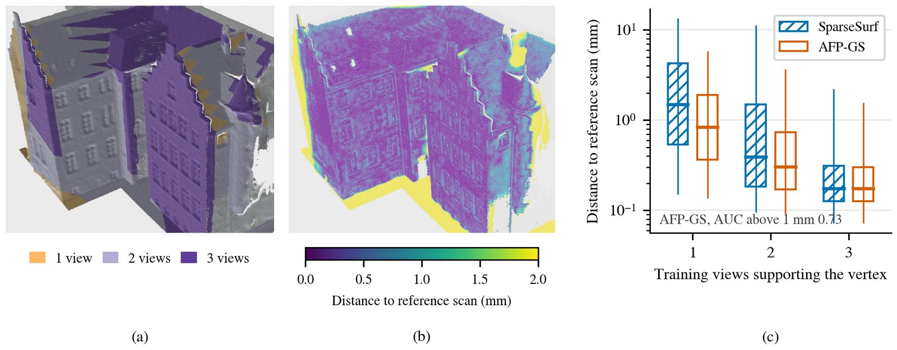
The support count predicts the surface error.
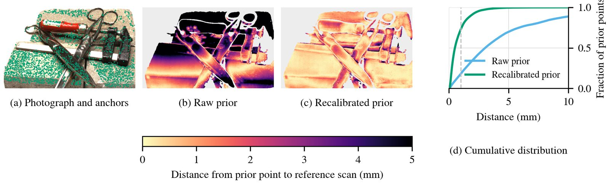
Anchored recalibration on one view of scan 37.
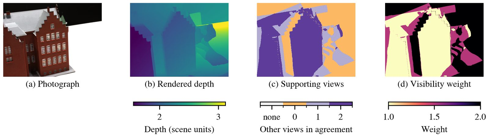
Visibility weight of the prior loss on scan 24.
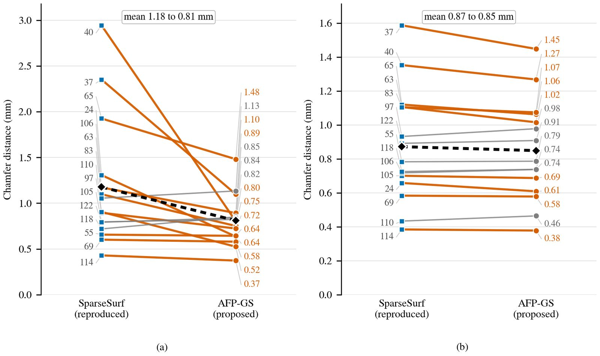
Chamfer distance of every DTU scene.
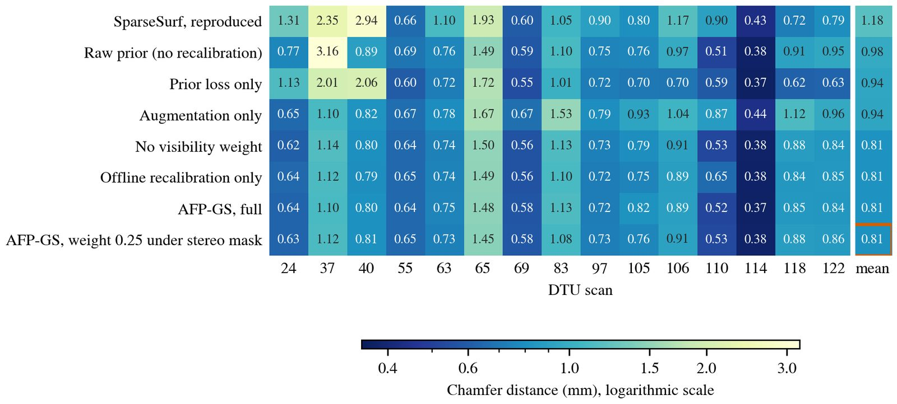
Ablation over the fifteen DTU scenes.
@article{wakjira2026afpgs,
title = {Anchored foundation prior Gaussian splatting for surface
reconstruction of built assets from three images},
author = {Wakjira, Tadesse G.},
journal = {Under Review},
year = {2026}
}